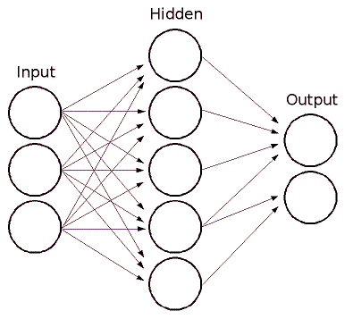

Machine Learning Overview
Training Data
In machine learning algorithms there is notion of training data. Training data includes several components:
- A set of training samples. Each training sample is a vector of values (in Computer Vision it’s sometimes referred to as feature vector). Usually all the vectors have the same number of components (features); OpenCV ml module assumes that. Each feature can be ordered (i.e. its values are floating-point numbers that can be compared with each other and strictly ordered, i.e. sorted) or categorical (i.e. its value belongs to a fixed set of values that can be integers, strings etc.).
- Optional set of responses corresponding to the samples. Training data with no responses is used in unsupervised learning algorithms that learn structure of the supplied data based on distances between different samples. Training data with responses is used in supervised learning algorithms, which learn the function mapping samples to responses. Usually the responses are scalar values, ordered (when we deal with regression problem) or categorical (when we deal with classification problem; in this case the responses are often called “labels”). Some algorithms, most noticeably Neural networks, can handle not only scalar, but also multi-dimensional or vector responses.
- Another optional component is the mask of missing measurements. Most algorithms require all the components in all the training samples be valid, but some other algorithms, such as decision tress, can handle the cases of missing measurements.
- In the case of classification problem user may want to give different weights to different classes. This is useful, for example, when:
- user wants to shift prediction accuracy towards lower false-alarm rate or higher hit-rate.
- user wants to compensate for significantly different amounts of training samples from different classes.
- In addition to that, each training sample may be given a weight, if user wants the algorithm to pay special attention to certain training samples and adjust the training model accordingly.
- Also, user may wish not to use the whole training data at once, but rather use parts of it, e.g. to do parameter optimization via cross-validation procedure.
As you can see, training data can have rather complex structure; besides, it may be very big and/or not entirely available, so there is need to make abstraction for this concept. In OpenCV ml there is cv::ml::TrainData class for that.
Normal Bayes Classifier
This simple classification model assumes that feature vectors from each class are normally distributed (though, not necessarily independently distributed). So, the whole data distribution function is assumed to be a Gaussian mixture, one component per class. Using the training data the algorithm estimates mean vectors and covariance matrices for every class, and then it uses them for prediction.
K-Nearest Neighbors
The algorithm caches all training samples and predicts the response for a new sample by analyzing a certain number (K) of the nearest neighbors of the sample using voting, calculating weighted sum, and so on. The method is sometimes referred to as “learning by example” because for prediction it looks for the feature vector with a known response that is closest to the given vector.
Support Vector Machines
Originally, support vector machines (SVM) was a technique for building an optimal binary (2-class) classifier. Later the technique was extended to regression and clustering problems. SVM is a partial case of kernel-based methods. It maps feature vectors into a higher-dimensional space using a kernel function and builds an optimal linear discriminating function in this space or an optimal hyper- plane that fits into the training data. In case of SVM, the kernel is not defined explicitly. Instead, a distance between any 2 points in the hyper-space needs to be defined.
The solution is optimal, which means that the margin between the separating hyper-plane and the nearest feature vectors from both classes (in case of 2-class classifier) is maximal. The feature vectors that are the closest to the hyper-plane are called support vectors, which means that the position of other vectors does not affect the hyper-plane (the decision function).
SVM implementation in OpenCV is based on [16]
Prediction with SVM
StatModel::predict(samples, results, flags) should be used. Pass flags=StatModel::RAW_OUTPUT to get the raw response from SVM (in the case of regression, 1-class or 2-class classification problem).
Decision Trees
The ML classes discussed in this section implement Classification and Regression Tree algorithms described in [10].
The class cv::ml::DTrees represents a single decision tree or a collection of decision trees. It’s also a base class for RTrees and Boost.
A decision tree is a binary tree (tree where each non-leaf node has two child nodes). It can be used either for classification or for regression. For classification, each tree leaf is marked with a class label; multiple leaves may have the same label. For regression, a constant is also assigned to each tree leaf, so the approximation function is piecewise constant.
Predicting with Decision Trees
To reach a leaf node and to obtain a response for the input feature vector, the prediction procedure starts with the root node. From each non-leaf node the procedure goes to the left (selects the left child node as the next observed node) or to the right based on the value of a certain variable whose index is stored in the observed node. The following variables are possible:
- Ordered variables. The variable value is compared with a threshold that is also stored in the node. If the value is less than the threshold, the procedure goes to the left. Otherwise, it goes to the right. For example, if the weight is less than 1 kilogram, the procedure goes to the left, else to the right.
- Categorical variables. A discrete variable value is tested to see whether it belongs to a certain subset of values (also stored in the node) from a limited set of values the variable could take. If it does, the procedure goes to the left. Otherwise, it goes to the right. For example, if the color is green or red, go to the left, else to the right.
So, in each node, a pair of entities (variable_index , decision_rule (threshold/subset)) is used. This pair is called a split (split on the variable variable_index ). Once a leaf node is reached, the value assigned to this node is used as the output of the prediction procedure.
Sometimes, certain features of the input vector are missed (for example, in the darkness it is difficult to determine the object color), and the prediction procedure may get stuck in the certain node (in the mentioned example, if the node is split by color). To avoid such situations, decision trees use so-called surrogate splits. That is, in addition to the best “primary” split, every tree node may also be split to one or more other variables with nearly the same results.
Training Decision Trees
The tree is built recursively, starting from the root node. All training data (feature vectors and responses) is used to split the root node. In each node the optimum decision rule (the best “primary” split) is found based on some criteria. In machine learning, gini “purity” criteria are used for classification, and sum of squared errors is used for regression. Then, if necessary, the surrogate splits are found. They resemble the results of the primary split on the training data. All the data is divided using the primary and the surrogate splits (like it is done in the prediction procedure) between the left and the right child node. Then, the procedure recursively splits both left and right nodes. At each node the recursive procedure may stop (that is, stop splitting the node further) in one of the following cases:
- Depth of the constructed tree branch has reached the specified maximum value.
- Number of training samples in the node is less than the specified threshold when it is not statistically representative to split the node further.
- All the samples in the node belong to the same class or, in case of regression, the variation is too small.
- The best found split does not give any noticeable improvement compared to a random choice.
When the tree is built, it may be pruned using a cross-validation procedure, if necessary. That is, some branches of the tree that may lead to the model overfitting are cut off. Normally, this procedure is only applied to standalone decision trees. Usually tree ensembles build trees that are small enough and use their own protection schemes against overfitting.
Variable Importance
Besides the prediction that is an obvious use of decision trees, the tree can be also used for various data analyses. One of the key properties of the constructed decision tree algorithms is an ability to compute the importance (relative decisive power) of each variable. For example, in a spam filter that uses a set of words occurred in the message as a feature vector, the variable importance rating can be used to determine the most “spam-indicating” words and thus help keep the dictionary size reasonable.
Importance of each variable is computed over all the splits on this variable in the tree, primary and surrogate ones. Thus, to compute variable importance correctly, the surrogate splits must be enabled in the training parameters, even if there is no missing data.
Boosting
A common machine learning task is supervised learning. In supervised learning, the goal is to learn the functional relationship \(F: y = F(x)\) between the input \(x\) and the output \(y\). Predicting the qualitative output is called classification, while predicting the quantitative output is called regression.
Boosting is a powerful learning concept that provides a solution to the supervised classification learning task. It combines the performance of many “weak” classifiers to produce a powerful committee [83]. A weak classifier is only required to be better than chance, and thus can be very simple and computationally inexpensive. However, many of them smartly combine results to a strong classifier that often outperforms most “monolithic” strong classifiers such as SVMs and Neural Networks.
Decision trees are the most popular weak classifiers used in boosting schemes. Often the simplest decision trees with only a single split node per tree (called stumps ) are sufficient.
The boosted model is based on \(N\) training examples \({(x_i,y_i)}1N\) with \(x_i \in{R^K}\) and \(y_i \in{-1, +1}\). \(x_i\) is a \(K\) -component vector. Each component encodes a feature relevant to the learning task at hand. The desired two-class output is encoded as -1 and +1.
Different variants of boosting are known as Discrete Adaboost, Real AdaBoost, LogitBoost, and Gentle AdaBoost [29]. All of them are very similar in their overall structure. Therefore, this chapter focuses only on the standard two-class Discrete AdaBoost algorithm, outlined below. Initially the same weight is assigned to each sample (step 2). Then, a weak classifier \(f_{m(x)}\) is trained on the weighted training data (step 3a). Its weighted training error and scaling factor \(c_m\) is computed (step 3b). The weights are increased for training samples that have been misclassified (step 3c). All weights are then normalized, and the process of finding the next weak classifier continues for another \(M\) -1 times. The final classifier \(F(x)\) is the sign of the weighted sum over the individual weak classifiers (step 4).
Two-class Discrete AdaBoost Algorithm
- Set \(N\) examples \({(x_i,y_i)}1N\) with \(x_i \in{R^K}, y_i \in{-1, +1}\).
- Assign weights as \(w_i = 1/N, i = 1,...,N\).
- Repeat for \(m = 1,2,...,M\) :
- Fit the classifier \(f_m(x) \in{-1,1}\), using weights \(w_i\) on the training data.
- Compute \(err_m = E_w [1_{(y \neq f_m(x))}], c_m = log((1 - err_m)/err_m)\).
- Set \(w_i \Leftarrow w_i exp[c_m 1_{(y_i \neq f_m(x_i))}], i = 1,2,...,N,\) and renormalize so that \(\Sigma i w_i = 1\).
- Classify new samples x using the formula: \(\textrm{sign} (\Sigma m = 1M c_m f_m(x))\).
Similar to the classical boosting methods, the current implementation supports two-class classifiers only. For M > 2 classes, there is the AdaBoost.MH algorithm (described in [29]) that reduces the problem to the two-class problem, yet with a much larger training set.
To reduce computation time for boosted models without substantially losing accuracy, the influence trimming technique can be employed. As the training algorithm proceeds and the number of trees in the ensemble is increased, a larger number of the training samples are classified correctly and with increasing confidence, thereby those samples receive smaller weights on the subsequent iterations. Examples with a very low relative weight have a small impact on the weak classifier training. Thus, such examples may be excluded during the weak classifier training without having much effect on the induced classifier. This process is controlled with the weight_trim_rate parameter. Only examples with the summary fraction weight_trim_rate of the total weight mass are used in the weak classifier training. Note that the weights for all training examples are recomputed at each training iteration. Examples deleted at a particular iteration may be used again for learning some of the weak classifiers further [29]
Prediction with Boost
StatModel::predict(samples, results, flags) should be used. Pass flags=StatModel::RAW_OUTPUT to get the raw sum from Boost classifier.
Random Trees
Random trees have been introduced by Leo Breiman and Adele Cutler: http://www.stat.berkeley.edu/users/breiman/RandomForests/. The algorithm can deal with both classification and regression problems. Random trees is a collection (ensemble) of tree predictors that is called forest further in this section (the term has been also introduced by L. Breiman). The classification works as follows: the random trees classifier takes the input feature vector, classifies it with every tree in the forest, and outputs the class label that received the majority of “votes”. In case of a regression, the classifier response is the average of the responses over all the trees in the forest.
All the trees are trained with the same parameters but on different training sets. These sets are generated from the original training set using the bootstrap procedure: for each training set, you randomly select the same number of vectors as in the original set ( =N ). The vectors are chosen with replacement. That is, some vectors will occur more than once and some will be absent. At each node of each trained tree, not all the variables are used to find the best split, but a random subset of them. With each node a new subset is generated. However, its size is fixed for all the nodes and all the trees. It is a training parameter set to \(\sqrt{number\_of\_variables}\) by default. None of the built trees are pruned.
In random trees there is no need for any accuracy estimation procedures, such as cross-validation or bootstrap, or a separate test set to get an estimate of the training error. The error is estimated internally during the training. When the training set for the current tree is drawn by sampling with replacement, some vectors are left out (so-called oob (out-of-bag) data). The size of oob data is about N/3 . The classification error is estimated by using this oob-data as follows:
- Get a prediction for each vector, which is oob relative to the i-th tree, using the very i-th tree.
- After all the trees have been trained, for each vector that has ever been oob, find the class- winner for it (the class that has got the majority of votes in the trees where the vector was oob) and compare it to the ground-truth response.
- Compute the classification error estimate as a ratio of the number of misclassified oob vectors to all the vectors in the original data. In case of regression, the oob-error is computed as the squared error for oob vectors difference divided by the total number of vectors.
For the random trees usage example, please, see letter_recog.cpp sample in OpenCV distribution.
References:
- Machine Learning, Wald I, July 2002. http://stat-www.berkeley.edu/users/breiman/wald2002-1.pdf
- Looking Inside the Black Box, Wald II, July 2002. http://stat-www.berkeley.edu/users/breiman/wald2002-2.pdf
- Software for the Masses, Wald III, July 2002. http://stat-www.berkeley.edu/users/breiman/wald2002-3.pdf
- And other articles from the web site http://www.stat.berkeley.edu/users/breiman/RandomForests/cc_home.htm
Expectation Maximization
The Expectation Maximization(EM) algorithm estimates the parameters of the multivariate probability density function in the form of a Gaussian mixture distribution with a specified number of mixtures.
Consider the set of the N feature vectors {\(x_1, x_2,...,x_{N}\)} from a d-dimensional Euclidean space drawn from a Gaussian mixture:
where \(m\) is the number of mixtures, \(p_k\) is the normal distribution density with the mean \(a_k\) and covariance matrix \(S_k\), \(\pi_k\) is the weight of the k-th mixture. Given the number of mixtures \(M\) and the samples \(x_i\), \(i=1..N\) the algorithm finds the maximum- likelihood estimates (MLE) of all the mixture parameters, that is, \(a_k\), \(S_k\) and \(\pi_k\) :
The EM algorithm is an iterative procedure. Each iteration includes two steps. At the first step (Expectation step or E-step), you find a probability \(p_{i,k}\) (denoted \(\alpha_{i,k}\) in the formula below) of sample i to belong to mixture k using the currently available mixture parameter estimates:
At the second step (Maximization step or M-step), the mixture parameter estimates are refined using the computed probabilities:
Alternatively, the algorithm may start with the M-step when the initial values for \(p_{i,k}\) can be provided. Another alternative when \(p_{i,k}\) are unknown is to use a simpler clustering algorithm to pre-cluster the input samples and thus obtain initial \(p_{i,k}\). Often (including machine learning) the k-means algorithm is used for that purpose.
One of the main problems of the EM algorithm is a large number of parameters to estimate. The majority of the parameters reside in covariance matrices, which are \(d \times d\) elements each where \(d\) is the feature space dimensionality. However, in many practical problems, the covariance matrices are close to diagonal or even to \(\mu_k*I\), where \(I\) is an identity matrix and \(\mu_k\) is a mixture-dependent “scale” parameter. So, a robust computation scheme could start with harder constraints on the covariance matrices and then use the estimated parameters as an input for a less constrained optimization problem (often a diagonal covariance matrix is already a good enough approximation).
References:
- Bilmes98 J. A. Bilmes. A Gentle Tutorial of the EM Algorithm and its Application to Parameter Estimation for Gaussian Mixture and Hidden Markov Models. Technical Report TR-97-021, International Computer Science Institute and Computer Science Division, University of California at Berkeley, April 1998.
Neural Networks
ML implements feed-forward artificial neural networks or, more particularly, multi-layer perceptrons (MLP), the most commonly used type of neural networks. MLP consists of the input layer, output layer, and one or more hidden layers. Each layer of MLP includes one or more neurons directionally linked with the neurons from the previous and the next layer. The example below represents a 3-layer perceptron with three inputs, two outputs, and the hidden layer including five neurons:
All the neurons in MLP are similar. Each of them has several input links (it takes the output values from several neurons in the previous layer as input) and several output links (it passes the response to several neurons in the next layer). The values retrieved from the previous layer are summed up with certain weights, individual for each neuron, plus the bias term. The sum is transformed using the activation function \(f\) that may be also different for different neurons.

In other words, given the outputs \(x_j\) of the layer \(n\), the outputs \(y_i\) of the layer \(n+1\) are computed as:
Different activation functions may be used. ML implements three standard functions:
Identity function (cv::ml::ANN_MLP::IDENTITY): \(f(x)=x\)
Symmetrical sigmoid (cv::ml::ANN_MLP::SIGMOID_SYM): \(f(x)=\beta*(1-e^{-\alpha x})/(1+e^{-\alpha x}\)), which is the default choice for MLP. The standard sigmoid with \(\beta =1, \alpha =1\) is shown below:

Gaussian function (cv::ml::ANN_MLP::GAUSSIAN): \(f(x)=\beta e^{-\alpha x*x}\), which is not completely supported at the moment.
In ML, all the neurons have the same activation functions, with the same free parameters (\(\alpha, \beta\)) that are specified by user and are not altered by the training algorithms.
So, the whole trained network works as follows:
- Take the feature vector as input. The vector size is equal to the size of the input layer.
- Pass values as input to the first hidden layer.
- Compute outputs of the hidden layer using the weights and the activation functions.
- Pass outputs further downstream until you compute the output layer.
So, to compute the network, you need to know all the weights \(w^{n+1)}_{i,j}\). The weights are computed by the training algorithm. The algorithm takes a training set, multiple input vectors with the corresponding output vectors, and iteratively adjusts the weights to enable the network to give the desired response to the provided input vectors.
The larger the network size (the number of hidden layers and their sizes) is, the more the potential network flexibility is. The error on the training set could be made arbitrarily small. But at the same time the learned network also “learns” the noise present in the training set, so the error on the test set usually starts increasing after the network size reaches a limit. Besides, the larger networks are trained much longer than the smaller ones, so it is reasonable to pre-process the data, using cv::PCA or similar technique, and train a smaller network on only essential features.
Another MLP feature is an inability to handle categorical data as is. However, there is a workaround. If a certain feature in the input or output (in case of n -class classifier for \(n>2\)) layer is categorical and can take \(M>2\) different values, it makes sense to represent it as a binary tuple of M elements, where the i -th element is 1 if and only if the feature is equal to the i -th value out of M possible. It increases the size of the input/output layer but speeds up the training algorithm convergence and at the same time enables “fuzzy” values of such variables, that is, a tuple of probabilities instead of a fixed value.
ML implements two algorithms for training MLP’s. The first algorithm is a classical random sequential back-propagation algorithm. The second (default) one is a batch RPROP algorithm.
Logistic Regression
ML implements logistic regression, which is a probabilistic classification technique. Logistic Regression is a binary classification algorithm which is closely related to Support Vector Machines (SVM). Like SVM, Logistic Regression can be extended to work on multi-class classification problems like digit recognition (i.e. recognizing digitis like 0,1 2, 3,… from the given images). This version of Logistic Regression supports both binary and multi-class classifications (for multi-class it creates a multiple 2-class classifiers). In order to train the logistic regression classifier, Batch Gradient Descent and Mini-Batch Gradient Descent algorithms are used (see http://en.wikipedia.org/wiki/Gradient_descent_optimization). Logistic Regression is a discriminative classifier (see http://www.cs.cmu.edu/~tom/NewChapters.html for more details). Logistic Regression is implemented as a C++ class in LogisticRegression.
In Logistic Regression, we try to optimize the training paramater \(\theta\) such that the hypothesis \(0 \leq h_\theta(x) \leq 1\) is acheived. We have \(h_\theta(x) = g(h_\theta(x))\) and \(g(z) = \frac{1}{1+e^{-z}}\) as the logistic or sigmoid function. The term “Logistic” in Logistic Regression refers to this function. For given data of a binary classification problem of classes 0 and 1, one can determine that the given data instance belongs to class 1 if \(h_\theta(x) \geq 0.5\) or class 0 if \(h_\theta(x) < 0.5\).
In Logistic Regression, choosing the right parameters is of utmost importance for reducing the training error and ensuring high training accuracy:
- The learning rate can be set with setLearningRate method. It determines how fast we approach the solution. It is a positive real number.
- Optimization algorithms like Batch Gradient Descent and Mini-Batch Gradient Descent are supported in LogisticRegression. It is important that we mention the number of iterations these optimization algorithms have to run. The number of iterations can be set with setIterations. This parameter can be thought as number of steps taken and learning rate specifies if it is a long step or a short step. This and previous parameter define how fast we arrive at a possible solution.
- In order to compensate for overfitting regularization is performed, which can be enabled with setRegularization. One can specify what kind of regularization has to be performed by passing one of regularization kinds to this method.
- Logistic regression implementation provides a choice of 2 training methods with Batch Gradient Descent or the MiniBatch Gradient Descent. To specify this, call setTrainMethod with either LogisticRegression::BATCH or LogisticRegression::MINI_BATCH. If training method is set to MINI_BATCH, the size of the mini batch has to be to a postive integer set with setMiniBatchSize.
A sample set of training parameters for the Logistic Regression classifier can be initialized as follows:
Ptr<LogisticRegression> lr1 = LogisticRegression::create(); lr1->setLearningRate(0.001); lr1->setIterations(10); lr1->setRegularization(LogisticRegression::REG_L2); lr1->setTrainMethod(LogisticRegression::BATCH); lr1->setMiniBatchSize(1);
See also: